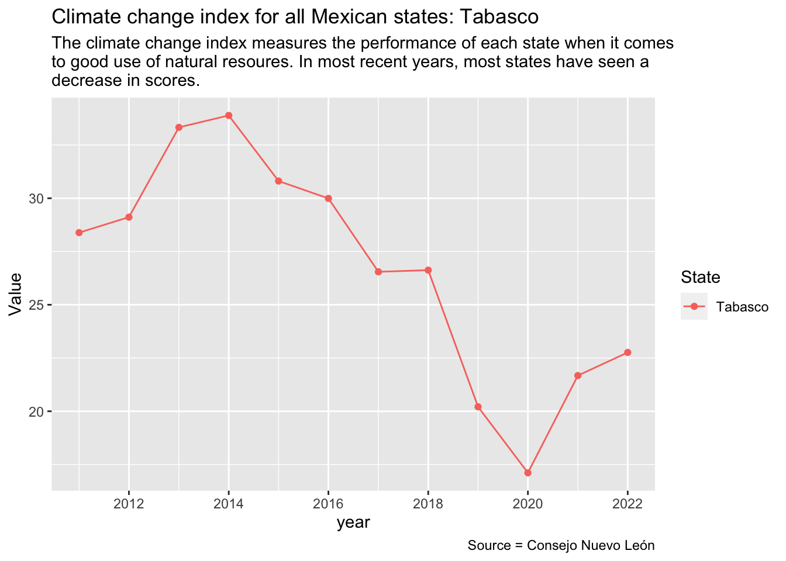

Compare the 31 states and the entity of Mexico City in terms of the climate change index, water insecurity, groundwater access and reforestation efforts in a line chart to visualize the data.
How does each state rank in each of the categories? Which are the best and worst states?
Setting up
library(tidyverse)
── Attaching core tidyverse packages ──────────────────────── tidyverse 2.0.0 ──
✔ dplyr 1.1.4 ✔ readr 2.1.5
✔ forcats 1.0.0 ✔ stringr 1.5.1
✔ ggplot2 3.4.4 ✔ tibble 3.2.1
✔ lubridate 1.9.3 ✔ tidyr 1.3.0
✔ purrr 1.0.2
── Conflicts ────────────────────────────────────────── tidyverse_conflicts() ──
✖ dplyr::filter() masks stats::filter()
✖ dplyr::lag() masks stats::lag()
ℹ Use the conflicted package (<http://conflicted.r-lib.org/>) to force all conflicts to become errors
library(janitor)
Attaching package: 'janitor'
The following objects are masked from 'package:stats':
chisq.test, fisher.test
library(rvest)
Attaching package: 'rvest'
The following object is masked from 'package:readr':
guess_encoding
library(httr2)library(clipr)
Welcome to clipr. See ?write_clip for advisories on writing to the clipboard in R.
Importing the cleaned data
Here I am importing the data from my cleaning notebook so that I can start my analysis.
Now we will plot using a function for each of the Mexican states:
plot_climate <-function(plot_state) { climate_change_index |>filter(unidad_geografica_str == plot_state, unidad_geografica_str !="Nacional") |>ggplot(aes(x = ano, y = valor, color = unidad_geografica_str)) +geom_point() +geom_line() +labs(title =str_glue("Climate change index for all Mexican states: ", plot_state|>str_to_title()), x="year", y="Value", color ="State", subtitle =str_wrap("The climate change index measures the performance of each state when it comes to good use of natural resoures. In most recent years, most states have seen a decrease in scores."), caption ="Source = Consejo Nuevo León") }## This is an example to make sure that it works: plot_climate(climate_change_list[[1]])
Now we will map the function to plot all of the states:
climate_change_list |>map(plot_climate)
[[1]]
[[2]]
[[3]]
[[4]]
[[5]]
[[6]]
[[7]]
[[8]]
[[9]]
[[10]]
[[11]]
[[12]]
[[13]]
[[14]]
[[15]]
[[16]]
[[17]]
[[18]]
[[19]]
[[20]]

[[21]]
[[22]]
[[23]]
[[24]]
[[25]]
[[26]]
[[27]]
[[28]]
[[29]]
[[30]]
[[31]]
[[32]]
[[33]]
I noticed a trend with a significant drop in scores throughout many charts in the year 2018.
I’m going to plot all of the states together to observe this:
climate_joint_chart <- climate_change_index |>ggplot(aes(x = ano, y = valor, color = unidad_geografica_str)) +geom_point() +geom_line() +labs(title ="Climate change index for all Mexican states", subtitle=str_wrap("The climate change index score of most Mexican states dropped significantly in 2018, the year current President Andres Manuel Lopez Obrador came into power."), x ="Year", y ="Value", color ="State", caption ="Source = Consejo Nuevo León") +theme(legend.position ="bottom")ggsave("figures/climate_joint_chart.png")
Saving 7 x 5 in image
Note: “Nacional,” which represents all of the states combined, has no data.
Data takeaways: The overall climate change index levels have decreased in recent years. The entity of Mexico City was consistently scored the highest since 2011, while the state of Quintana Roo stays closer to the bottom of the ranking with a low score of 13.143 in 2022. Meanwhile, the states of Hidalgo and Oaxaca improved significantly during the pandemic years.
The decrease in score began some time before the pandemic, around 2018. Interestingly enough, President Andres Manuel Lopez Obrador came into office in Dec. 2018. More exploration and reporting would be needed to explain if there is a relationship between the lower scores and this event.
Water insecurity
Now I want to compare the percentage of homes that the Household Water Insecurity Experiences-HWISE qualifies as going through drinking water insecurity. This data focuses on data just from 2021 to 2022.
This particular data set also includes “Nacional” which represents the average percentage of homes dealing with water insecurity in the entire country.
Now I am plotting the data for each Mexican state with a function:
plot_water_insecurity <-function(plot_state) { water_insecurity_percent |>filter(unidad_geografica_str == plot_state) |>ggplot(aes(x = ano, y = valor, color = unidad_geografica_str)) +geom_point() +geom_col() +labs(title =str_glue("Percentage of water insecurity in all 32 Mexican states: ", plot_state|>str_to_title()), x="Year", y="Value", color ="State", subtitle =str_wrap("The state of Nuevo León had a drastic increase in homes experiencing water insecurity, with almost half of homes not having enough access to water in 2022."), caption ="Source = Consejo Nuevo León")}## This is an example to make sure that it works: plot_water_insecurity(water_insecurity_list[[1]])
Now I will list out the rest of the Mexican states:
Data takeaways: The state of Nuevo León saw a drastic increase in homes experiencing water insecurity from 2021 to 2022. The percentage of homes increased from 7.004% to 42.014% or almost half of the population. Meanwhile, in the state of Tabasco, the percentage of homes dealing with water insecurity dropped from 38.690% to 10.830%.
Groundwater
Now I will look at the volume of available groundwater that can be used by each population in a way that will not hurt the environment.
The data for this variable only accounts for information from 2018 and 2020.
plot_groundwater <-function(plot_state) { groundwater_volume |>filter(unidad_geografica_str == plot_state) |>ggplot(aes(x = ano, y = valor, color = unidad_geografica_str)) +geom_point() +geom_col() +labs(title =str_glue("Volume of available groundwater in each Mexican state: ", plot_state|>str_to_title()), x="Year", y="Value", color ="State", subtitle =str_wrap("Many states like Nuevo León are experiencing an increasing deficit of groundwater availablility."), caption ="Source = Consejo Nuevo León")}## This is an example to make sure that it works: plot_groundwater(groundwater_list[[1]])
Now I will plot each state:
groundwater_list |>map(plot_groundwater)
[[1]]
[[2]]
[[3]]
[[4]]
[[5]]
[[6]]
[[7]]
[[8]]
[[9]]
[[10]]
[[11]]
[[12]]
[[13]]
[[14]]
[[15]]
[[16]]
[[17]]
[[18]]
[[19]]
[[20]]
[[21]]
[[22]]
[[23]]
[[24]]
[[25]]
[[26]]
[[27]]
[[28]]
[[29]]
[[30]]
[[31]]
[[32]]
[[33]]
Data takeaways: The availability of groundwater in 2018 decreased from -131.490 to -294.150 millions of cubic meters of groundwater, meaning that there is an increase in the deficit volume of groundwater in this state. Nuevo León went through an intense drought in 2022, whose data is not included.
Reforestation
Lastly, I will add the data for the hectares of reforestation done by each state. This data also includes “Nacional” or the amount of hectares reforested in the entire nation by year.
plot_reforestation <-function(plot_state) { reforestation_hectares |>filter(unidad_geografica_str == plot_state) |>ggplot(aes(x = ano, y = valor, color = unidad_geografica_str)) +geom_point() +geom_line() +labs(title =str_glue("Hectares reforested in each Mexican state: ", plot_state|>str_to_title()), x="Year", y="Value", color ="State", subtitle =str_wrap("At the national level, the most amount of hectares reforested was 375,705.790 in 2012."), caption ="Source = Consejo Nuevo León")}## This is an example to make sure that it works: plot_reforestation(reforestation_list[[1]])
Now I will plot each state:
reforestation_list |>map(plot_reforestation)
[[1]]
[[2]]
[[3]]
[[4]]
[[5]]
[[6]]
[[7]]
[[8]]
[[9]]
[[10]]
[[11]]
[[12]]
[[13]]
[[14]]
[[15]]
[[16]]
[[17]]
[[18]]
[[19]]
[[20]]
[[21]]
[[22]]
[[23]]
[[24]]
[[25]]
[[26]]
[[27]]
[[28]]
[[29]]
[[30]]
[[31]]
[[32]]
[[33]]
Data takeaway: The national amount of hectares reforested is not surprisingly the entity with the highest amount of hectares. The peak of reforestation happened in 2012, with 375,705.790 hectares reforested in 2012. In 2020, the total amount of hectares reforested dropped to a stunning 4,618.38.
Comparing all 32 state rankings
Here I will use a ranking to determine how well each state performed in each category.
Starting with the ranking for the climate change index:
climate_rank <- climate_change_index |>group_by(ano) |>## Group by year so I could see the ranking by year mutate(ranking =dense_rank(desc(valor))) |>## Then created the rank variable in descending order because a higher score is a better score. arrange(desc(valor)) |>## I wanted to visualize the highest to lowest scores all together add_column(source ="Climate")climate_rank
# A tibble: 384 × 5
# Groups: ano [12]
unidad_geografica_str valor ano ranking source
<chr> <dbl> <date> <int> <chr>
1 Ciudad de México 83.4 2015-01-01 1 Climate
2 Ciudad de México 83.2 2016-01-01 1 Climate
3 Ciudad de México 80.4 2014-01-01 1 Climate
4 Ciudad de México 80.2 2013-01-01 1 Climate
5 Ciudad de México 80.1 2012-01-01 1 Climate
6 Ciudad de México 80.0 2011-01-01 1 Climate
7 Ciudad de México 78.3 2018-01-01 1 Climate
8 Ciudad de México 77.3 2017-01-01 1 Climate
9 Ciudad de México 71.8 2020-01-01 1 Climate
10 Ciudad de México 71.7 2022-01-01 1 Climate
# ℹ 374 more rows
I am using a column graph to show the ranking distribution of each state per year:
climate_rank_chart <- climate_rank |>ggplot(aes(fill = ranking, x= ano |>year() |>as.character(), y= unidad_geografica_str)) +geom_tile() +geom_text(aes(label = ranking), color ="white")+labs(x ="Year",y ="State",title ="Climate change index ranking by year for each Mexican state",color ="Ranking", subtitle =str_wrap("Ciudad de México constantly had the highest ranking for climate change index score. Notably, Mexico City has the highest population density of the country."), caption ="Source = Consejo Nuevo León" ) +theme(legend.position ="bottom")ggsave("figures/climate_rank_chart.png")
Saving 7 x 5 in image
Now we print our ranking chart so it looks good on the computer:
Data takeaway: Ranking each of the 32 federal entities from 1 to 32, we can show that a higher ranking which is associated with a better score performance is represented with a darker blue shade. Aguascalientes and Ciudad de México consistently have a higher ranking per year, while states like Tabasco and Chiapas consistently ranked lower. Ciudad de México is a large urban area, where the data might observe less natural resources.
Now I want to look at the water insecurity percentage data and rank each states performance:
water_insecurity_rank <- water_insecurity_percent |>group_by(ano) |>## Group by year so I could see the ranking by year mutate(ranking =dense_rank(valor)) |>## Then created the rank variable in descending order because a higher score is a better score. arrange(valor) |>## I wanted to visualize the highest to lowest scores all together add_column(source ="Water insecurity")water_insecurity_rank
# A tibble: 66 × 5
# Groups: ano [2]
unidad_geografica_str valor ano ranking source
<chr> <dbl> <date> <int> <chr>
1 Yucatán 3.55 2021-01-01 1 Water insecurity
2 Chihuahua 3.85 2021-01-01 2 Water insecurity
3 Quintana Roo 4.38 2021-01-01 3 Water insecurity
4 Tamaulipas 4.52 2021-01-01 4 Water insecurity
5 Tlaxcala 5.14 2022-01-01 1 Water insecurity
6 Yucatán 5.50 2022-01-01 2 Water insecurity
7 Campeche 6.72 2022-01-01 3 Water insecurity
8 Nuevo León 7.00 2021-01-01 5 Water insecurity
9 Sinaloa 7.32 2022-01-01 4 Water insecurity
10 Colima 7.65 2021-01-01 6 Water insecurity
# ℹ 56 more rows
Now I want to visualize the ranking:
water_insecurity_chart <- water_insecurity_rank |>ggplot(aes(fill = ranking, x= ano |>year() |>as.character(), y= unidad_geografica_str)) +geom_tile() +geom_text(aes(label = ranking), color ="white") +labs(x ="Year",y ="State",title ="Water insecurity performance ranking by year for each Mexican state",color ="Ranking",subtitle =str_wrap("Nuevo León had 7.004% of homes with not enough available water in 2021, ranking in fifth place compared to other states. In 2022, the state ranked in last place with 42.014% of homes experiencing water insecurity in 2022."), caption ="Source = Consejo Nuevo León" ) +theme(legend.position ="bottom")ggsave("figures/water_insecurity_chart.png")
Saving 7 x 5 in image
Groundwater ranking for the states with the most amount of groundwater is represented with this data:
groundwater_rank <- groundwater_volume |>group_by(ano) |>## Group by year so I could see the ranking by year mutate(ranking =dense_rank(desc(valor))) |>## Then created the rank variable in descending order because a higher score is a better score. arrange(desc(valor)) |>## I wanted to visualize the highest to lowest scores all together add_column(source ="Groundwater")groundwater_rank
groundwater_chart <- groundwater_rank |>ggplot(aes(fill = ranking, x= ano |>year() |>as.character(), y= unidad_geografica_str)) +geom_tile() +geom_text(aes(label = ranking), color="white") +labs(x ="Year",y ="State",title ="Amount of available groundwater volume for each Mexican state",color ="Ranking", subtitle =str_wrap("Nuevo León has a significant deficit of groundwater availablility, with -294.150 millions of cubic meters of groundwater."), caption ="Source = Consejo Nuevo León" ) +theme(legend.position ="bottom")ggsave("figures/groundwater_chart.png")
Saving 7 x 5 in image
Finally, lets look at the ranking for reforestation efforts in each state:
reforestation_rank <- reforestation_hectares |>filter(unidad_geografica_str !="Nacional") |>group_by(ano) |>## Group by year so I could see the ranking by year mutate(ranking =dense_rank(desc(valor))) |>## Then created the rank variable in descending order because a higher score is a better score. arrange(desc(valor)) |>## I wanted to visualize the highest to lowest scores all together add_column(source ="Reforestation")reforestation_rank
reforestation_chart <- reforestation_rank |>ggplot(aes(fill = ranking, x= ano |>year() |>as.character(), y= unidad_geografica_str)) +geom_tile() +geom_text(aes(label = ranking), color ="white") +labs(x ="Year",y ="State",title ="Hectares reforested in each Mexican state",color ="Ranking", subtitle =str_wrap("Hectares of reforested areas in each state vary consistently. The year 2012 had a significant increase in reforested areas, with states like San Luis Potosi and Coahuila leading in rank."), caption ="Source = Consejo Nuevo León" ) +theme(legend.position ="bottom")ggsave("figures/reforestation_chart.png")
Saving 7 x 5 in image
Nuevo León ranking
In order to see how my home state of Nuevo León did in all of the categories I have to put the ranking data together:
# A tibble: 32 × 5
# Groups: ano [17]
unidad_geografica_str valor ano ranking source
<chr> <dbl> <date> <int> <chr>
1 Nuevo León 68.8 2014-01-01 3 Climate
2 Nuevo León 68.1 2016-01-01 3 Climate
3 Nuevo León 67.4 2015-01-01 2 Climate
4 Nuevo León 66.1 2013-01-01 3 Climate
5 Nuevo León 62.7 2012-01-01 3 Climate
6 Nuevo León 59.9 2017-01-01 4 Climate
7 Nuevo León 57.6 2011-01-01 9 Climate
8 Nuevo León 56.1 2018-01-01 5 Climate
9 Nuevo León 39.0 2019-01-01 5 Climate
10 Nuevo León 37.6 2022-01-01 4 Climate
# ℹ 22 more rows
## We added the source column in each ranking break down
Visualize the ranking for Nuevo León:
nuevo_leon_ranking |>ggplot(aes(fill = ranking, x= ano |>year() |>as.character(), y= source)) +geom_tile()+geom_text(aes(label = ranking), color ="white") +labs(x ="Year",y ="Category",title ="Nuevo León ranking in all four categories",color ="Ranking", subtitle =str_wrap("Each tile represents the ranking position of the state of Nuevo León for the four different categories: climate change index, water insecurity, groundwater and reforestation. Even though Nuevo León placed 33rd in 2022 for water insecurity, which is the lowest ranking position, the state ranked fourth in the same year for climate change index."), caption ="Source = Consejo Nuevo León" ) +theme(legend.position ="bottom")
ggsave("figures/nuevo_leon_ranking.png")
Saving 7 x 5 in image
Data takeaways: Each tile represents the ranking position of the state of Nuevo León for the four different categories: climate change index, water insecurity, groundwater and reforestation. Even though Nuevo León placed thirty third in 2022 for water insecurity (including the ranking for the whole nation plus 32 federal entities), which is the lowest ranking, the state ranked fourth in the same year for climate change index, or how well the state uses its natural resources. Extra reporting and investigation would be needed to asses these contrasting results.
For the category of reforestation, Nuevo León has significantly improved when compared to other states. In 1993, Nuevo León occupied 16th place, but moved up to fourth in 2022.